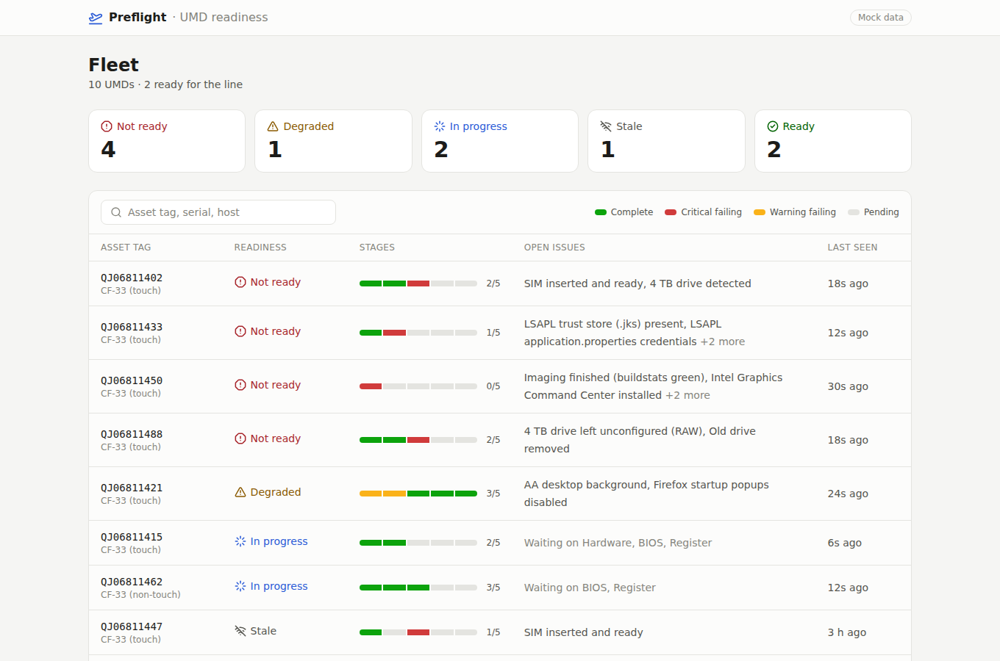
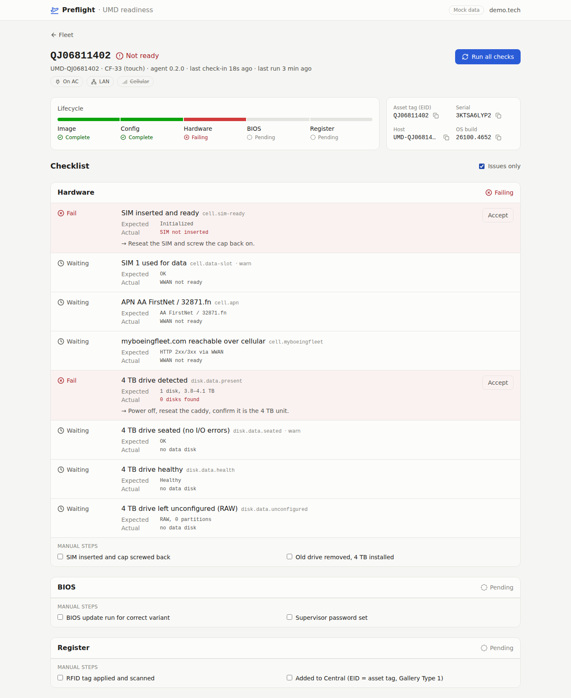
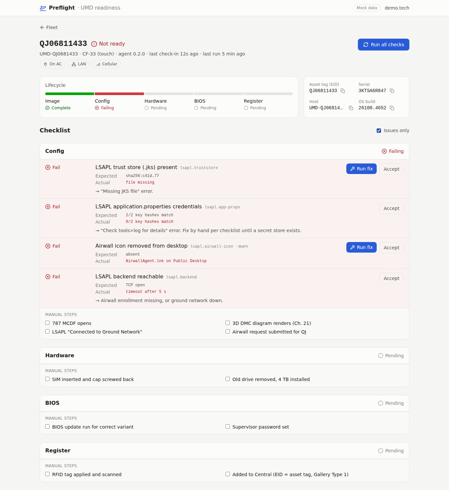
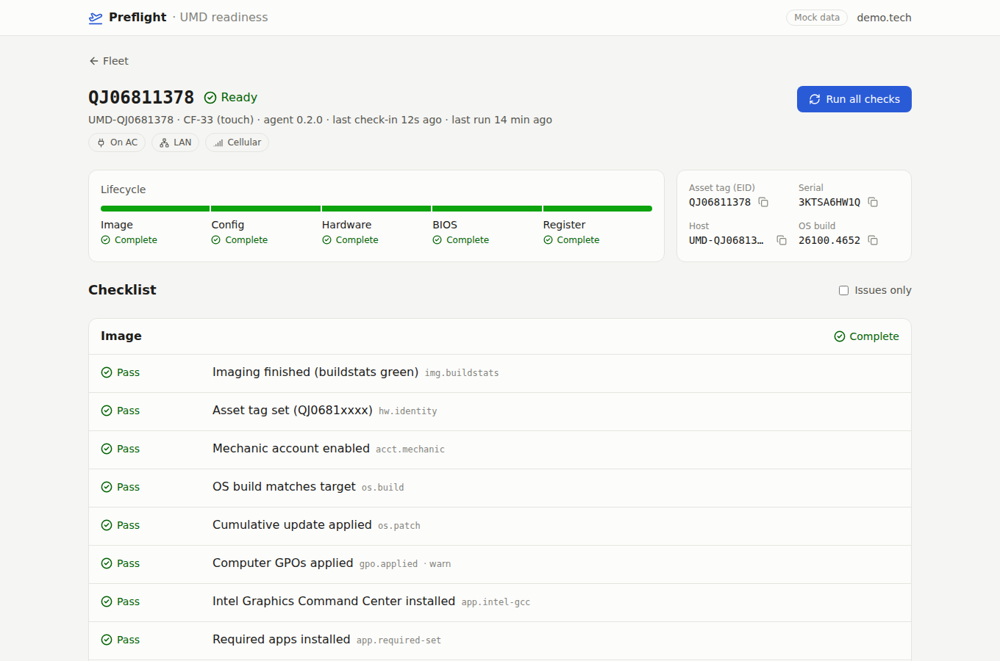
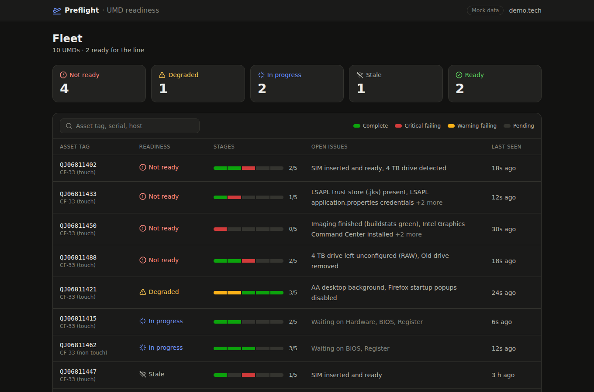
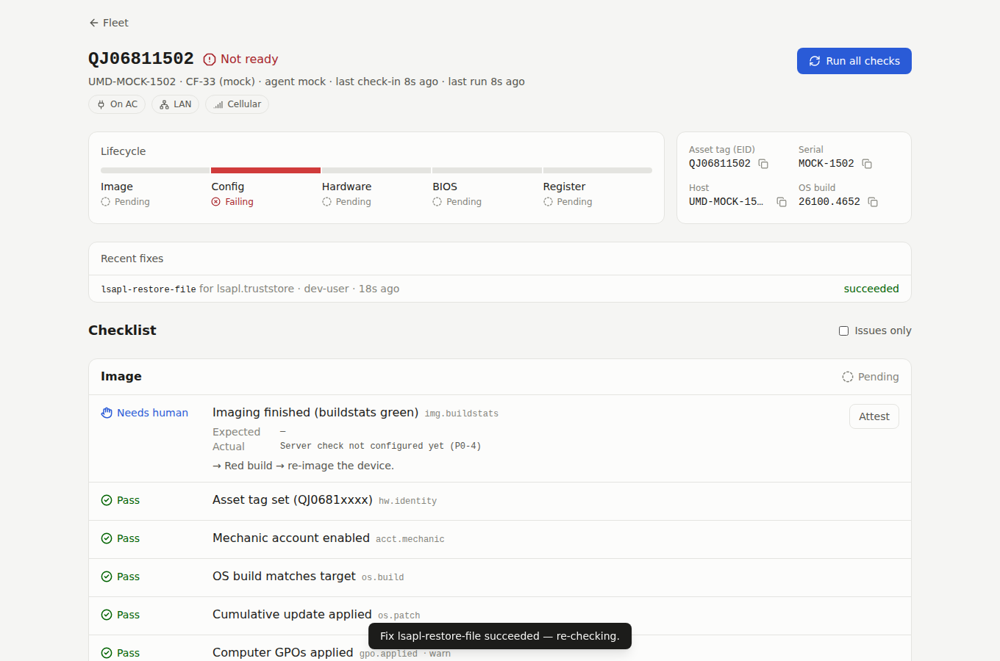

Management Report
Preflight Agent
UMD post-imaging validation platform
Executive Summary
Preflight Agent is a post-imaging validation platform for UMD Panasonic rugged laptops. It replaces a paper checklist with three connected capabilities:
- A Windows agent that inspects laptop state after SCCM imaging.
- An API that stores results, calculates readiness, manages policy, and records audit history.
- A web dashboard that lets technicians monitor devices, review failed checks, attest manual steps, request re-checks, and run approved fixes.
The project has reached a functional v0.3 vertical slice. The core monorepo, shared contracts, API, dashboard, mock fleet, agent runner, check scripts, remediation controls, packaging path, security controls, and automated test structure are in place. Remaining work is primarily operational validation: capture the full reference-laptop baseline, confirm environment-specific dependencies, complete buildstats integration, and run the pilot against real UMD devices.
Application Preview
The screenshots below show the current dashboard experience across fleet monitoring, device validation, remediation, responsive layout, and completed readiness states.






Business Use Case
After SCCM imaging, technicians must validate each UMD laptop across configuration, hardware, BIOS, and registration. Preflight replaces the paper checklist with one fleet view showing readiness, failed checks, manual actions, evidence, and approved fixes.
It validates state only. It does not replace SCCM, run arbitrary commands, change BIOS settings, partition disks, or format drives.
What Has Been Delivered
- Platform foundation: TypeScript monorepo, shared contracts, API, database migrations, embedded pilot database, production PostgreSQL support, and repeatable demo fleet.
- Windows agent: service packaging, secure enrollment, periodic check-in, offline queueing, structured PowerShell checks, and SCCM deployment path.
- API and governance: readiness tracking, role-based access, attestations, policy management, job lifecycle, audit history, rate limiting, and redacted evidence.
- Dashboard: fleet readiness, device checklists, stage re-checks, technician attestations, approved fixes, and live/mock operating modes.
Current Architecture
A Windows service runs bundled read-only checks and sends outbound HTTPS results to the API. The API stores results and calculates readiness; the role-protected dashboard presents fleet status and technician actions. Local queueing supports temporary connectivity loss. Expected values come from the golden manifest, with secrets excluded from records.
Progress Against Plan
T1-T15 are recorded complete in v0.3, covering the platform, agent, API, dashboard, checks, packaging, and remediation framework.
Remaining: T16 buildstats integration, T17 real-device pilot, and completion of Phase 0 values currently marked TBD. Non-touch BIOS baseline is captured; other production values still need confirmation.
Operational Value
Expected benefit: faster and more consistent validation, earlier fault detection, fewer technician errors, clear ownership of manual work, and auditable fleet readiness.
Risks and Dependencies
Main risks are incomplete baseline values and unverified real hardware behavior. Production also depends on corporate TLS/networking, Entra setup, PostgreSQL ownership, NAS access, and an approved secret store. Full build, test, lint, and Windows checks remain required before pilot approval.
Recommended Next Steps
Complete the reference-laptop baseline, resolve environment dependencies, finish T16, run CI and clean-VM checks, then execute T17 on one or two UMD laptops alongside the paper checklist. Review mismatches with operations and security before enabling fixes.
Decision Requested
Approve continued work toward a controlled pilot, subject to completion of the Phase 0 baseline and security/environment dependency review. Do not approve broad production deployment until real-device comparison confirms that automated results match the approved checklist and all remaining TBD values have an owner and resolution.